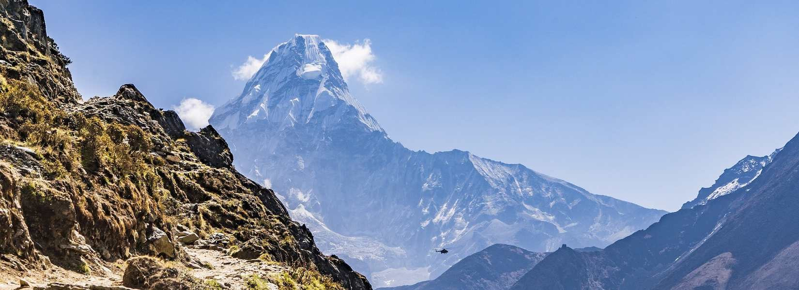
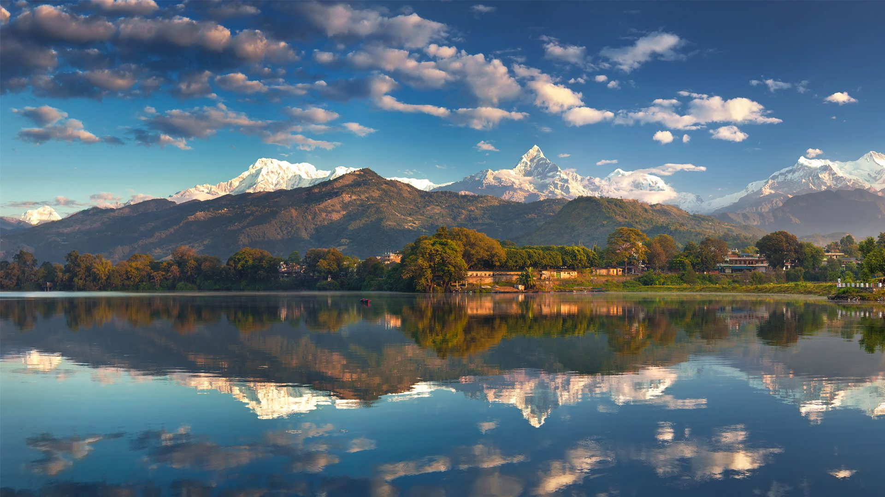
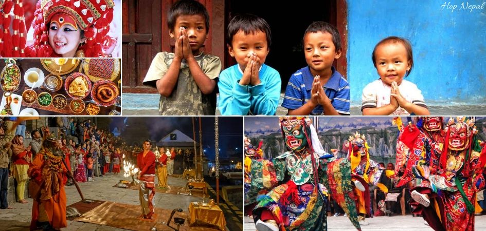

Plan Your Nepal Adventure
Discover the mystical land of mountains, ancient traditions, and vibrant cultures. Let us help you plan an unforgettable journey to Nepal.

Best Time to Visit
Nepal experiences four main seasons, each offering a unique experience. Learn the best time to visit based on your interests.
Learn More
Popular Destinations
From the mighty Himalayas to ancient temples and vibrant cities, explore Nepal's must-visit destinations.
Explore
Cultural Experiences
Immerse yourself in Nepal's rich traditions, festivals, and authentic cultural experiences.
DiscoverPlanning Your Trip
Best Time to Visit Nepal
Nepal has four distinct seasons, each offering a unique experience for travelers:
Spring (March-May)
Perfect for trekking and mountain views. The weather is moderate with clear skies, and rhododendron forests bloom spectacularly in the mountains.
Ideal for: Trekking, Wildlife Viewing, Cultural Tours
Learn MoreSummer/Monsoon (June-August)
The monsoon season brings heavy rainfall throughout the country. While trekking can be challenging, this is a great time to explore rain-shadow areas like Upper Mustang.
Ideal for: Rain-shadow areas, Cultural Experiences, Lower Rates
Learn MoreAutumn (September-November)
The most popular season for visitors. Clear skies, moderate temperatures, and stunning mountain views make it ideal for trekking and outdoor activities.
Ideal for: Trekking, Photography, Festivals
Learn MoreWinter (December-February)
Cold in the mountains but pleasant in lower elevations. Less crowded trails and clear mountain views make it good for certain treks.
Ideal for: Lower Altitude Treks, City Tours, Jungle Safaris
Learn MoreSuggested Itineraries
Whether you have a week or a month, here are some itineraries to make the most of your Nepal visit:
1-Week Cultural Tour +
Day 1-2: Explore Kathmandu Valley's UNESCO World Heritage Sites
Day 3-4: Visit Pokhara and enjoy Lake Phewa
Day 5-6: Experience Bandipur or Nagarkot
Day 7: Return to Kathmandu
Detailed Itinerary2-Week Trekking Adventure +
Day 1-2: Explore Kathmandu
Day 3-12: Annapurna Base Camp Trek or Everest Base Camp Trek
Day 13-14: Relaxation in Pokhara or Kathmandu
Detailed Itinerary3-Week Complete Nepal Experience +
Day 1-3: Kathmandu Valley exploration
Day 4-14: Trekking in Annapurna or Everest region
Day 15-17: Chitwan National Park safari
Day 18-20: Lumbini (Birthplace of Buddha)
Day 21: Return to Kathmandu
Detailed ItineraryVisas & Permits
Before planning your trip to Nepal, ensure you have all the necessary documentation:
Tourist Visa
Most visitors need a visa to enter Nepal. Visas can be obtained on arrival at Tribhuvan International Airport or at Nepal's land borders with India and Tibet.
- 15-day visa: $30 USD
- 30-day visa: $50 USD
- 90-day visa: $125 USD
You can also apply online through the Department of Immigration website.
Trekking Permits
Different trekking areas require specific permits:
- Trekkers' Information Management System (TIMS) Card: Required for most trekking routes
- Conservation Area Permits: Required for protected areas like Annapurna, Manaslu, Kanchenjunga
- Restricted Area Permits: Required for regions like Upper Mustang, Upper Dolpo, and Tsum Valley
Cultural Guidelines
Nepal is rich in cultural diversity with deep religious traditions. Follow these guidelines to show respect for local customs:
Religious Sites
- Remove shoes before entering temples and monasteries
- Ask permission before taking photos
- Walk clockwise around stupas and religious monuments
- Avoid touching offerings or religious objects
Greetings & Interactions
- Use "Namaste" with palms together as a respectful greeting
- Ask permission before photographing people
- Public displays of affection are frowned upon
- The left hand is considered unclean; use right hand for giving and receiving
Dress Code
- Dress modestly, especially at religious sites
- Cover shoulders and knees when visiting temples
- Remove leather items before entering certain Hindu temples
Popular Destinations
Mountains & Trekking Destinations
Everest Region
Home to the world's highest peak, the Everest region offers spectacular treks including the famous Everest Base Camp Trek.
Major attractions: Mount Everest, Kala Patthar, Namche Bazaar, Tengboche Monastery
Learn MoreAnnapurna Region
Nepal's most popular trekking destination featuring diverse landscapes from subtropical forests to high alpine terrain.
Major attractions: Annapurna Circuit, Annapurna Base Camp, Poon Hill, Thorong La Pass
Learn MoreLangtang Valley
A beautiful alpine valley close to Kathmandu, offering excellent trekking without the crowds.
Major attractions: Kyanjin Gompa, Langtang Peak, Tserko Ri, Gosainkunda Lakes
Learn MoreUpper Mustang
A remote, semi-arid region with Tibetan cultural influence and spectacular landscape.
Major attractions: Lo Manthang, Sky Caves, Chhoser, Mustang Himal
Learn MoreCities & Cultural Heritage
Kathmandu
Nepal's capital city is a cultural treasure trove with numerous UNESCO World Heritage Sites.
Major attractions: Durbar Square, Swayambhunath (Monkey Temple), Boudhanath Stupa, Pashupatinath Temple
Learn MorePokhara
Nepal's adventure capital with stunning lake views and a gateway to the Annapurna range.
Major attractions: Phewa Lake, World Peace Pagoda, Sarangkot, Davis Falls
Learn MoreBhaktapur
A living museum of medieval arts and architecture with well-preserved ancient buildings.
Major attractions: Durbar Square, Nyatapola Temple, Pottery Square, 55 Window Palace
Learn MoreBandipur
A charming hilltop town showcasing traditional Newari architecture and culture.
Major attractions: Old Bazaar, Thani Mai Temple, Siddha Cave, Tundikhel
Learn MoreWildlife & Nature
Chitwan National Park
Nepal's first national park and a UNESCO World Heritage Site known for its biodiversity.
Wildlife: One-horned rhinoceros, Bengal tigers, sloth bears, crocodiles, over 500 bird species
Learn MoreBardia National Park
Nepal's largest national park offering a more remote and less-visited wildlife experience.
Wildlife: Tigers, elephants, rhinos, Gangetic dolphins, various deer species
Learn MoreShivapuri Nagarjun National Park
Located on the northern fringe of Kathmandu Valley, offering hiking and birdwatching opportunities.
Attractions: Hiking trails, diverse flora and fauna, Nagi Gompa, Shivapuri Peak
Learn MoreKoshi Tappu Wildlife Reserve
A paradise for birdwatchers and home to rare animals like wild water buffalo.
Wildlife: Over 485 bird species, wild buffalo, Gangetic dolphin, jackals
Learn MoreSpiritual & Religious Sites
Lumbini
Birthplace of Lord Buddha and a UNESCO World Heritage Site with numerous monasteries.
Major attractions: Maya Devi Temple, Ashoka Pillar, World Peace Pagoda, international monasteries
Learn MorePashupatinath Temple
One of the most sacred Hindu temples dedicated to Lord Shiva, located on the banks of the Bagmati River.
Major attractions: Main temple complex, cremation ghats, Maha Shivaratri festival
Learn MoreBoudhanath Stupa
One of the largest stupas in the world and an important center for Tibetan Buddhism.
Major attractions: The massive stupa, surrounding monasteries, prayer wheels, Losar festival
Learn MoreMuktinath Temple
A sacred site for both Hindus and Buddhists, located at an altitude of 3,710 meters.
Major attractions: The temple, 108 water spouts, eternal flame, stunning mountain views
Learn MoreTrip Cost Estimator
Plan your budget with our interactive cost estimator tool.
Estimated Cost Per Person
$0 USD
Note: This is an approximate estimate and actual costs may vary based on season, specific accommodations, activities, and personal preferences.
Frequently Asked Questions
Nepal is generally considered a safe destination for tourists. As with any travel destination, it's advisable to take standard precautions. The Nepali people are known for their hospitality and friendliness toward visitors. For the latest safety information, check your country's travel advisory before your trip.
While there are no mandatory vaccinations required for entering Nepal, it's recommended to be up-to-date on routine vaccines like measles-mumps-rubella, diphtheria-tetanus-pertussis, varicella, and your yearly flu shot. Depending on your activities, hepatitis A, typhoid, hepatitis B, Japanese encephalitis, and rabies vaccines might be recommended. Consult with a travel medicine specialist before your trip.
Internet connectivity is generally good in major cities like Kathmandu and Pokhara, with many hotels, restaurants, and cafes offering Wi-Fi. In trekking areas, connectivity becomes limited but is improving. You can purchase a local SIM card with a data plan at affordable prices. Network providers like Ncell and Nepal Telecom offer good coverage in most populated areas.
The Nepalese Rupee (NPR) is the official currency. ATMs are widely available in major cities and tourist areas. Credit cards are accepted at higher-end establishments, but cash is preferred in most places. It's advisable to carry cash, especially when trekking or visiting remote areas. Currency exchange services are available at banks, hotels, and authorized money changers.
While it's not mandatory for all treks, hiring a licensed guide is highly recommended for safety, navigation, cultural insights, and supporting the local economy. Some restricted areas require guides by law. For popular routes like Annapurna Circuit or Everest Base Camp, the trails are well-marked, but a guide enhances the experience. For remote or challenging treks, a guide is essential for safety and navigation.
Cultural Experiences
Major Festivals of Nepal
Nepal celebrates numerous vibrant festivals throughout the year. Here are some of the most significant ones:
Dashain (September-October)
Nepal's biggest and most important festival celebrating the victory of good over evil. Families reunite, fly kites, set up swings, and receive blessings from elders.
Learn MoreTihar/Diwali (October-November)
The festival of lights honoring Laxmi (goddess of wealth) and celebrating the bond between brothers and sisters. Houses are decorated with oil lamps and colorful rangoli patterns.
Learn MoreHoli (February-March)
The festival of colors where people throw colored powders and water at each other. It celebrates the arrival of spring and the triumph of good over evil.
Learn MoreIndra Jatra (August-September)
A spectacular festival in Kathmandu featuring the display of Kumari (living goddess), masked dances, and the erection of a ceremonial pole.
Learn MoreTraditional Nepali Cuisine
Nepali cuisine is a delightful blend of flavors influenced by its neighbors but with its own unique identity:
Dal Bhat
The national dish consisting of steamed rice, lentil soup, and various curries, pickles, and vegetables. This staple meal provides a complete nutritional profile and is eaten twice daily by many Nepalis.
Momos
Delicious dumplings filled with meat or vegetables, served with spicy dipping sauce. Found throughout Nepal, momos are a beloved street food and restaurant favorite.
Newari Cuisine
The indigenous cuisine of the Kathmandu Valley featuring dishes like Bara (lentil pancakes), Chatamari (rice flour pizza), Choila (spiced meat), and Yomari (sweet dumplings).
Thakali and Sherpa Cuisine
Mountain cuisines with hearty dishes like buckwheat pancakes, thukpa (noodle soup), and Sherpa stew, designed to provide energy in high-altitude environments.
Traditional Arts & Crafts
Nepal has a rich tradition of artisanship passed down through generations:
Thangka Painting
Intricate Buddhist paintings on cotton or silk depicting deities, mandalas, and religious scenes. These sacred artworks take months to create using traditional techniques and natural pigments.
Wood Carving
Elaborate carvings adorn temples, palaces, and traditional homes. Newari artisans are particularly renowned for their intricate wooden sculptures and architectural elements.
Metal Crafts
Statues of deities, singing bowls, and ritual objects crafted using the lost-wax casting method. Patan is famous for its skilled metal craftsmen who create exquisite bronze and copper items.
Textiles
Traditional weaving, Dhaka fabric, pashmina, and felt products showcase Nepal's textile heritage. Each ethnic group has distinctive patterns and techniques for creating textiles used in daily life and ceremonies.
Local Customs & Etiquette
Understanding these customs will help you navigate Nepali culture respectfully:
Greetings
- "Namaste" with palms together at chest level is the traditional greeting
- Slight bow shows extra respect to elders
- Avoid shaking hands, especially with the opposite gender
Food Customs
- Eat with your right hand when eating without utensils
- It's polite to be offered food multiple times before accepting
- Always wash hands before and after meals
- Refusing food can be considered impolite
Home Visits
- Remove shoes before entering homes
- A small gift is appreciated when visiting homes
- Accept tea or food offerings when provided
- Compliment the home and express gratitude
Sacred Places
- Dress modestly at religious sites
- Walk clockwise around stupas and temples
- Don't point feet at people, shrines or images
- Ask permission before photographing ceremonies
Need Help Planning Your Trip?
Connect with local travel experts who can help customize your perfect Nepal adventure.